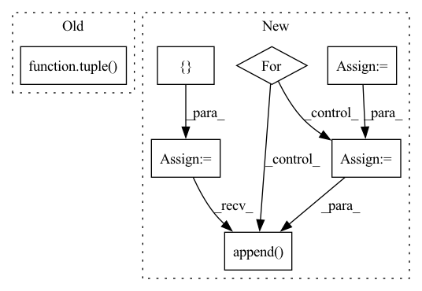

Pattern ID :15633

Before Change
def shift_tokens(x, amt):
*x, x_pass = x.chunk(amt + 1, dim = -1)
x = tuple(map(lambda args: shift(*args), zip(x, range(0, amt + 1))))
return torch.cat((*x, x_pass), dim = -1)
// helper classes
After Change
amts = 2 ** torch.arange(amt)
amts = amts.tolist()
shifts = []
denom = torch.arange(n, device = device)
for x_chunk, x_cumsum_chunk, amt in zip(x, x_cumsum, amts):
shifted_chunk = shift(x_cumsum_chunk, amt, dim = -2) - shift(x_cumsum_chunk, 2 * amt, dim = -2)
shifted_denom = shift(denom, amt, dim = -1) - shift(denom, 2 * amt, dim = -1)
shifted_denom = rearrange(shifted_denom, "n -> () n ()")
normed_shifted_x = shifted_chunk / (shifted_denom + eps)
shifts.append(normed_shifted_x)
return torch.cat((*shifts, x_pass), dim = -1)
// helper classes
In pattern: SUPERPATTERN
Frequency: 3
Non-data size: 7
Instances
Fragment ID: 52874740
Project Name: lucidrains/token-shift-gpt
Commit Name: ee7f1bcc4e0dae69d1cccb5154cbff1020571b9c
Time: 2021-08-17
Author: lucidrains@gmail.com
File Name: token_shift_gpt/token_shift_gpt.py
M Class Name: AnonimousClass
N Class Name: AnonimousClass
M Method Name: shift_tokens(3)
N Method Name: shift_tokens(2)
M Parent Class:
N Parent Class:
M File Name: token_shift_gpt/token_shift_gpt.py
N File Name: token_shift_gpt/token_shift_gpt.py
M Start Line: 17
M End Line: 18
N Start Line: 16
N End Line: 36
'>
Before Change
def self_bleu_(generate_corpus, n_gram, reference_corpus=None):
weights = [0, 0, 0, 0, 0]
weights[n_gram-1] = 1
weights = tuple(weights)
self_bleu_score = []
for idx in range(len(generate_corpus)):
candidate = generate_corpus[idx]
reference_corpus = generate_corpus[:idx] + generate_corpus[idx+1:]
After Change
weight[n_gram - 1] = 0.0
bleu = SelfBLEU(generate_corpus, weights)
scores = bleu.get_score()
results = []
for n_gram in n_grams:
score = np.array(scores[n_gram])
results.append(score.mean())
return results
Function name and function mapper.
'>
Fragment ID: 52874738
Project Name: rucaibox/textbox
Commit Name: 74995b26ad538f821707a331a83f34c8559f1ed8
Time: 2020-12-03
Author: 1020139164@qq.com
File Name: textbox/evaluator/metrics.py
M Class Name: AnonimousClass
N Class Name: AnonimousClass
M Method Name: self_bleu_(3)
N Method Name: self_bleu_(3)
M Parent Class:
N Parent Class:
M File Name: textbox/evaluator/metrics.py
N File Name: textbox/evaluator/metrics.py
M Start Line: 29
M End Line: 38
N Start Line: 40
N End Line: 54
'>
Before Change
def shift_tokens(x, amt):
*x, x_pass = x.chunk(amt + 1, dim = -1)
x = tuple(map(lambda args: shift(*args), zip(x, range(0, amt + 1))))
return torch.cat((*x, x_pass), dim = -1)
// helper classes
After Change
amts = 2 ** torch.arange(amt)
amts = amts.tolist()
shifts = []
denom = torch.arange(n, device = device)
for x_chunk, x_cumsum_chunk, amt in zip(x, x_cumsum, amts):
shifted_chunk = shift(x_cumsum_chunk, amt, dim = -2) - shift(x_cumsum_chunk, 2 * amt, dim = -2)
shifted_denom = shift(denom, amt, dim = -1) - shift(denom, 2 * amt, dim = -1)
shifted_denom = rearrange(shifted_denom, "n -> () n ()")
normed_shifted_x = shifted_chunk / (shifted_denom + eps)
shifts.append(normed_shifted_x)
return torch.cat((*shifts, x_pass), dim = -1)
// helper classes
'>
Fragment ID: 52874752
Project Name: lucidrains/token-shift-gpt
Commit Name: ee7f1bcc4e0dae69d1cccb5154cbff1020571b9c
Time: 2021-08-17
Author: lucidrains@gmail.com
File Name: token_shift_gpt/token_shift_gpt.py
M Class Name: AnonimousClass
N Class Name: AnonimousClass
M Method Name: shift_tokens(3)
N Method Name: shift_tokens(2)
M Parent Class:
N Parent Class:
M File Name: token_shift_gpt/token_shift_gpt.py
N File Name: token_shift_gpt/token_shift_gpt.py
M Start Line: 17
M End Line: 18
N Start Line: 16
N End Line: 36
'>
Before Change
def bleu_(generate_corpus, reference_corpus, n_gram):
weights = [0, 0, 0, 0, 0]
weights[n_gram-1] = 1
weights = tuple(weights)
bleu_score = []
for candidate in generate_corpus:
bleu_score.append(sentence_bleu(reference_corpus, candidate, weights,
smoothing_function=SmoothingFunction().method1))
After Change
weights = {}
for n_gram in n_grams:
weight[n_gram - 1] = 1.0
weights[n_gram] = tuple(weight)
weight[n_gram - 1] = 0.0
bleu = BLEU(reference_corpus, weights)
scores = bleu.get_score(generate_corpus)
results = []
for n_gram in n_grams:
score = np.array(scores[n_gram])
results.append(score.mean())
return results
def self_bleu_(generate_corpus, n_grams, reference_corpus=None):
weight = [0] * max(n_grams)
'>
Fragment ID: 52874734
Project Name: rucaibox/textbox
Commit Name: 74995b26ad538f821707a331a83f34c8559f1ed8
Time: 2020-12-03
Author: 1020139164@qq.com
File Name: textbox/evaluator/metrics.py
M Class Name: AnonimousClass
N Class Name: AnonimousClass
M Method Name: bleu_(3)
N Method Name: bleu_(3)
M Parent Class:
N Parent Class:
M File Name: textbox/evaluator/metrics.py
N File Name: textbox/evaluator/metrics.py
M Start Line: 18
M End Line: 25
N Start Line: 23
N End Line: 37